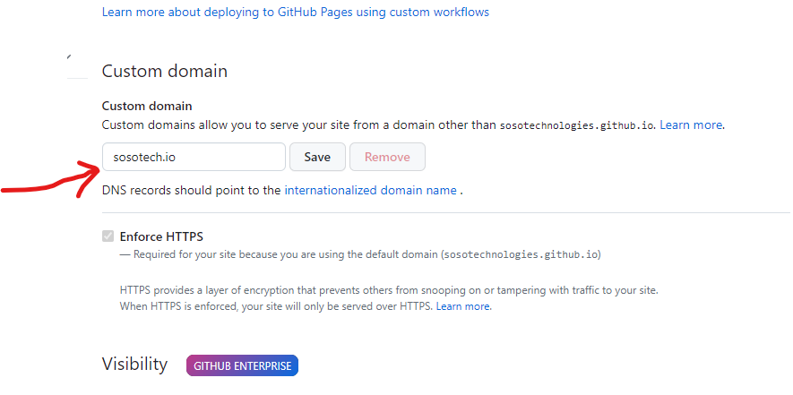
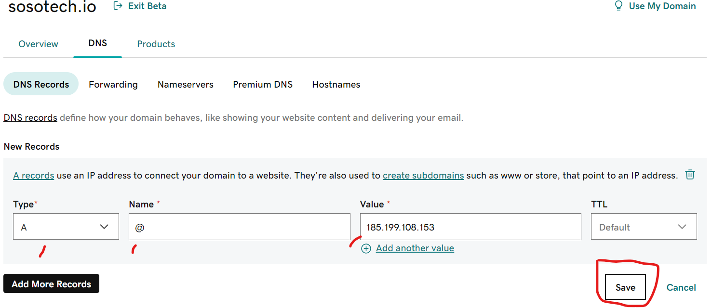
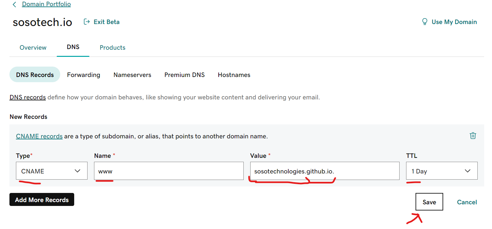
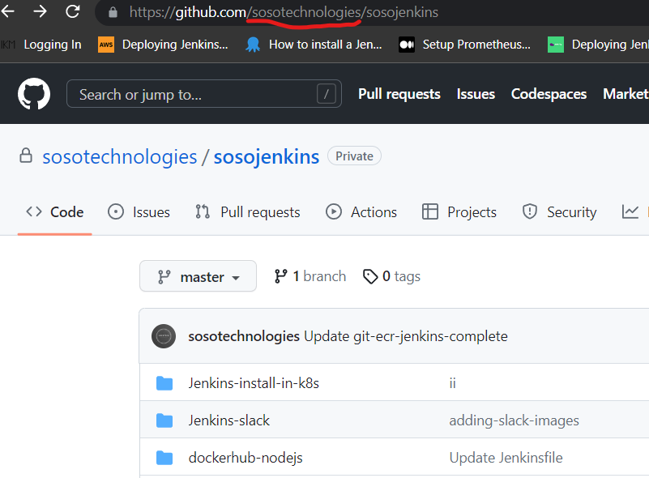
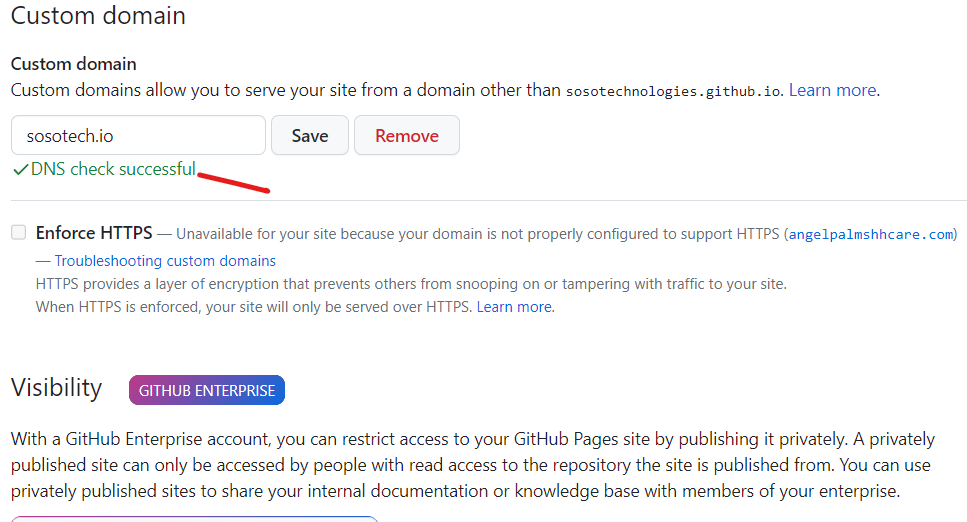

GITHUB custom Domain with GOdaddy
- Deploy your site and go to settings --> pages
- Go to GoDaddy site, purchase and click on domain u wanna use and configure.
- Go to ths GitHub-doc: To create A records, point your apex domain to the IP addresses for GitHub Pages-Link
Add the Domain to GitHub pages
In GitHub, go to settings --> pages and add the Custom domain 
configure an APEX domain
Copy the IP'S and create individual records for all the IP's
As og 04/2023, these are the 4 IP's:

185.199.108.153
185.199.109.153
185.199.110.153
185.199.111.153
Save the 4 A-RECORDS each as seen in my example of the 1'st IP

Save 1 CNAME-RECORD as seen in my example 
Get the value that will be added in the Godaddy value section from ur github url:

Go now and recheck the domain in GitHub pages and all should be good now. 